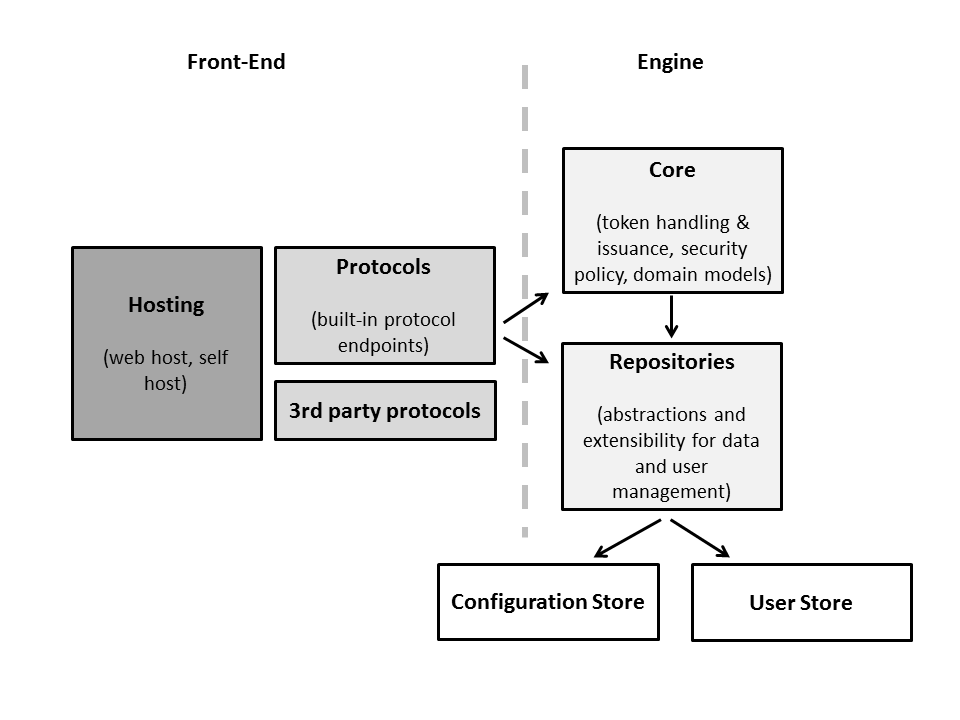

Light-weight, .NET based security token service that supports various protocols and token formats.
company websiteIdentityServer is a light-weight security token service built using .NET 4.5, ASP.NET MVC4, WCF and Web API. It has out-of-the-box support for user management using the ASP.NET membership and roles provider, but provides extensibility points to integrate arbitrary user databases. Futhermore almost any aspect of token issuance and data management can be customized using a plugin model.
IdentityServer consists of two major parts: front-end and engine.
The front-end includes hosting support for web hosting in IIS/ASP.NET and self-hosting for endpoints that don't require a UI. Furthermore IdSrv ships with a number of built-in protocol implementations that sit on top of the host. These protocols handle requests, make use of the IdSrv engine for token issuance and emit the corresponding response. Protocol support can be extended by adding new implementations to the host and using the common engine for the heavy lifting.
The IdSrv engine consists of the core runtime and configuration, data and user management. The core runtime takes care of enforcing security policy and token issuance whereas the data repositories abstract the underlying user and configuratin store. By providing custom implementations of these repositories, IdSrv can be adapted to arbitrary user management and configuration systems.
